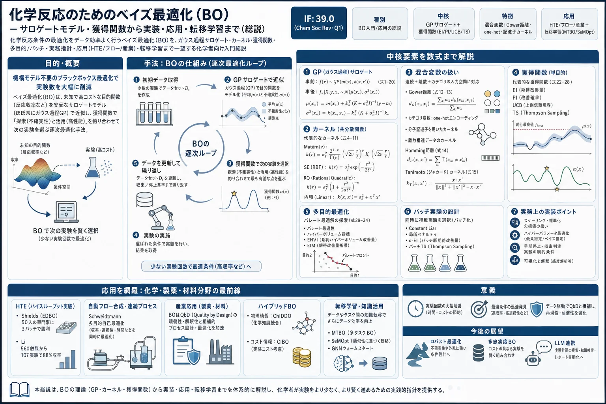

化学反応のためのベイズ最適化（BO）— サロゲートモデル・獲得関数から実装・応用・転移学習まで（総説）

<!-- 方針: 44ページのChem Soc Rev入門総説の全訳密度版。原文の節構成(1序論→2基礎→3 HTE→4フロー→5産業→6ハイブリッド→7最先端→8結論)に忠実。方法論の中核(2章)は数式込みで全訳。応用章(3-6)は原文の節立てに沿って代表研究と定量結果を網羅的に訳出。数式は元PDFのOCRが崩れていたため、原文が明示する標準形(Matérn/SE/EI/UCB等)を正しい形で再掲した(捏造ではなく同一の標準式の正確な表記)。対象は合成反応最適化で生薬ではないが、メソッド開発・QbD・データ駆動最適化の体系として収録。「> 補足:」は訳者注。 -->
書誌情報
- 標題（原題）: Bayesian optimization for chemical reactions
- 著者・所属: Stefan Desimpel*, Matthieu Dorbec, Kevin M. Van Geem, Christian V. Stevens（ゲント大学 SynBioC／化学技術研究室 LCT、ベルギー／Johnson & Johnson Innovative Medicine）
- 掲載誌・巻号・DOI: Chem. Soc. Rev., 2026, 55, 2731–2775. https://doi.org/10.1039/d5cs00962f
- インパクトファクター: 39.0（Chemical Society Reviews, Q1・2024 JCR。5年IF 50.4、化学・総合分野で世界トップ級の総説誌）
- 受理経過 / ライセンス: Received 2025-09-30 / Published 2026-02-10。CC BY-NC 4.0（総説、オープンアクセス）
補足（この論文の位置づけ）: 主題は生薬・漢方ではなく合成化学反応の条件最適化である。ただし本サイトに収録する理由は、「少ない実験回数で最適条件を賢く探す」データ駆動最適化（ベイズ最適化 BO）の、化学者向けの決定版入門だから。DoE（実験計画法）・QbD・応答曲面・満足度関数といった本サイトの他論文（doe-desirability-multiresponse-optimization/medicinal-plants-aqbd-review/retention-modeling-lc-review/insilico-hplc-qspr-lser-lss-retention）と地続きで、BO は「DoE の次」に来る最適化手法として位置づけられる。生薬の分析法・製造工程の最適化（多変数・多目的・高コスト実験）にもそのまま応用できる考え方が、数式と実例で丁寧に説明されている。 なお、元PDF（11.4MB）はサイズ上限のため画像ベースでしか取得できず、数式のOCRが崩れていた。本訳では、原文が明示的に名前を挙げる標準式（Matérn／二乗指数カーネル、EI／UCB 等）を正しい標準形で再掲している（これは捏造ではなく、同一の教科書的公式の正確な表記である）。個別の数値・研究結果は原文どおり。
要旨（Abstract）
ベイズ最適化（Bayesian optimization, BO）は、大きく混合型（連続・カテゴリ）のパラメータ空間において探索（exploration）と活用（exploitation）を釣り合わせることで、複雑な化学反応をデータ効率よく最適化する。本総説は、BO を採り入れたい化学者に向けた平易な入門であり、サロゲートモデル・獲得関数・主要な数学的概念の基礎を概説する。カーネル設計・カテゴリ変数の表現・多目的/バッチ最適化の戦略など、実務的な考慮を重視する。応用は、ハイスループットプラットフォームから自動フロー反応器・より大きなスケールのプロセスまで、実験スケールを横断して包括的に概観する。最後に、転移学習やデータ再利用といった新興の方向性を、最適化キャンペーンの加速とより汎化可能なデータ駆動戦略の実現の文脈で論じる。
1. 序論：反応最適化のツールとしてのベイズ最適化
反応条件の最適化は、効率的で頑健な化学プロセスの開発における重要な段階である。過去10年ほど、より効率的で持続可能な方法論への需要が、アルゴリズム的最適化戦略の採用を促してきた。中でもベイズ最適化は、必要実験数を最小化しつつ複雑な反応空間を効率的に探索できることから、支配的なアプローチの一つとして台頭した。Web of Science 上で化学反応に BO を参照する論文数は近年著しく増加している（Fig. 1）。
BO の台頭は自動フロープラットフォームの発展と密接に結びつく。適切な反応分析と組み合わせた自動プラットフォームは閉ループ最適化を可能にし、アルゴリズム誘導型最適化の説得力を高める。初期の取り組みは主に Simplex（Nelder–Mead 法、直接探索法）と SNOBFIT（ノイズのある目的関数の大域最適化のための導関数不要法）を用いた。Felpin らは修正 Simplex で Carpanone 合成の4工程を最適化し、Heck–Matsuda 反応も最適化した。Jensen/Jamison・Bourne らは SNOBFIT を医薬中間体合成に用いた。しかし両者は高次元探索空間で収束に苦しみ実験労力も大きく、複雑系では実用性に欠けた。Felton らの直接比較では、Simplex と SNOBFIT はランダム探索より悪いか僅かに良い程度で、BO が最良の性能を示した。混合感受性のカップリング反応でも BO は少ない実験点でより良い結果を得た。
2018年頃から BO が代替として探索され始めた。最初期の応用の一つが Schweidtmann ら（2018）で、連続フローでの SNAr 反応と N-ベンジル化反応の多目的自己最適化を実証し、限られた実験数でパレートフロントを同定できることを示した。本総説は BO の化学反応最適化への主要応用を概観する（ウェットラボの研究のみを扱い、計算のみの研究は含めない）。基礎の導入後、最小スケール（HTE・微小反応器・スラグ型プラットフォーム）、次いでフロー型、より大きなスケールとハイブリッド手法を論じる。
2. ベイズ最適化の基礎
BO は、未知の目的関数の大域的最小化（または最大化）を解く、データ効率的でモデルベースの枠組みである。逐次的アプローチで、化学反応のように各実験が多大な時間・費用・材料を要する「評価が高コストな問題」に特に適する。重要なのは、BO が目的関数をブラックボックスとして扱い、反応の詳細な機構モデルを要さない点である——基礎化学が部分的にしか理解されていなくても使える実用ツールとなる。
核心となる考え方は、未知で高コストな目的関数を、評価が安価なサロゲートモデルで置き換え、その予測性能と付随する不確実性の両方に基づいて獲得関数を介して新しい実験を選ぶことである。確率的サロゲートと組み合わせることで、BO は不確実性の高い領域の探索と、高性能が既知の条件の活用を釣り合わせる。
手順: (1) 初期化——ラテン超方格サンプリング（LHS）・DoE・ランダムサンプリング等、あるいは既存データで初期データを集める。(2) これでサロゲートを学習し、目的関数の挙動（滑らかさ・振幅など）についての事前分布を、データで更新して事後分布とする。(3) 獲得関数を最適化して次の実験点を提案。(4) 目的関数をその点で評価し、新データを訓練集合に追加、事後を更新。(5) 終了条件（規定回数・閾値超過・不確実性が十分低下）まで反復（Fig. 2）。
BO が化学反応最適化に適する要因:
- 高コスト問題へのデータ効率: 不確実性を定量するサロゲートにより、最適条件同定に要する実験数を減らす。
- 事前知識の取り込み: 履歴データ・専門家の直感・機構知識を、サロゲートのパラメータの事前分布として組み込める。
- ノイズ耐性: 確率的サロゲートは別個のノイズ項を導入でき、頑健な予測と不確実性推定を与える。
- 大域最適化: 探索と活用を釣り合わせることで局所最適に陥るリスクを最小化。
- 柔軟性: 連続・カテゴリの混合変数を扱え、多目的・制約付き問題にも拡張できる。
以下、BO の2大構成要素——サロゲートモデルと獲得関数——を詳述する。なお本節は BO の網羅的レビューではなく、ツールとして使い始める人向けの基礎導入である。
2.1 サロゲートモデル
反応最適化では、入力（温度・当量・溶媒・反応時間など）と出力（収率・選択性・生産性など）の関係が複雑で解析的に扱えない。このブラックボックス性と高コスト性が、データ効率的最適化を要求する。サロゲートは入力→出力を写像して未知の目的関数を近似し、少数の実験データから反応空間全体の予測と不確実性の定量を可能にする。獲得関数と協働して、真の目的を代理で最適化する。
BO 一般では Random Forest やニューラルネットもサロゲートに使われるが、化学反応最適化ではガウス過程（GP）が圧倒的に主流である。反応最適化は低データ域（実験が高コストで評価回数が限られる）で行われ、探索・活用のトレードオフを導くには原理的な予測不確実性が不可欠だからである。GP は予測と同時に原理的な不確実性推定を自然に与える（RF/NN の不確実性はヒューリスティックか計算が重い）。標準 GP はデータ増加に対しスケールが悪いが、実務ではその制約に達することは稀で、大規模用のスケーラブル GP も提案されている。
GP は関数上の分布を定義するノンパラメトリックな確率モデルで、未知の目的関数を「任意の有限部分集合が同時ガウス分布に従う確率変数の集まり」としてモデル化する。これにより各予測点で期待値（平均）だけでなく不確実性（分散）も予測できる。GP はガウス確率分布の一般化（有限次元のスカラー/ベクトル→関数空間への「密度」）と見なせ、GP からのサンプルは関数になる（Fig. 3）。
2.1.1 事前分布（Prior）: GP は平均関数 m(x) と共分散関数（カーネル）k(x,x′) で完全に定義される。観測 y(x) は基礎関数 f(x) に分散 σ_n² のガウスノイズが加わったものとして:
式(1) y(x) ～ GP(m(x), k(x,x′)) 式(2) m(x) := 𝔼[f(x)]、 式(3) k(x,x′) := 𝔼[(y(x)−m(x))(y(x′)−m(x′))]
平均関数は関数の「平均的な形」、カーネルはデータ点間の類似度を特徴づける（高次元特徴空間へ写像して距離・類似度を反映）。GP 回帰では、カーネルが当てはめ得る応答関数の性質（滑らかさ・周期性・全体挙動）を決める。最も使われるのは Matérn クラスで、平滑性パラメータ ν > 0 で滑らかさを調整できる（サンプルは ⌈ν⌉−1 回微分可能）:
式(4) Matérn: k_ν(x,x′) = σ_f² · (2^{1−ν}/Γ(ν)) · (√(2ν)·r)^ν · K_ν(√(2ν)·r)（Γ はガンマ関数、K_ν は第2種変形ベッセル関数） 式(5) スケール化ユークリッド距離 r = √[(x−x′)ᵀ Λ (x−x′)]、 Λ = diag(1/ℓ₁², …, 1/ℓ_D²)
実用上は ν = p + 1/2 で簡略化され、ν→∞ で二乗指数（SE）カーネルに収束する。よく使う形:
式(6) Matérn 1/2: σ_f² · exp(−r) 式(7) Matérn 3/2: σ_f² · (1 + √3·r) · exp(−√3·r) 式(8) Matérn 5/2: σ_f² · (1 + √5·r + (5/3)·r²) · exp(−√5·r) 式(9) 二乗指数 SE: σ_f² · exp(−(1/2)·r²)
各カーネルはハイパーパラメータ ξ = [ℓ₁,…,ℓ_D, σ_f] で支配される。Matérn 以外に有理二次（RQ）カーネル（式10、長さスケールの異なる SE の無限混合。α→∞ で SE に収束）と内積（線形）カーネル（式11、非定常カーネル。σ_b² はバイアス分散）がある。異方性カーネルは各入力次元に別々の長さスケール ℓ_d を学習する Automatic Relevance Determination（ARD）を可能にし、変数重要度の推定に使える（短い長さスケール＝影響大）。ただし ARD は非線形変数の重要度を過大評価しがちで、相関・少データ・高次元で識別性の問題を抱える——大域感度分析や加法的 GP の方が頑健なことがある。
混合変数（連続＋カテゴリ）のカーネル: 反応最適化では入力が連続・カテゴリ・構造符号化の混合であることが多い。標準のユークリッド距離では扱いきれないため、いくつかの戦略がある:
- Gower 距離で既存カーネルを拡張（式12: 連続はスケール化マンハッタン距離、カテゴリは一致/不一致の指標を組み合わせる。q=量的因子数、d=離散因子数）。Matérn 5/2 に組み込むと混合変数カーネル（式13）となり、ハイパーパラメータは標準 Matérn と同じ。
- one-hot エンコーディング: k 水準のカテゴリ変数を長さ k の二値ベクトルに変換（Fig. 5）。単純で普及 GP 実装と相性が良いが、全カテゴリを等距離に扱い化学的類似性を無視する。それでも実務では良好に機能することが多い。
- 分子記述子: 配位子や溶媒を分子フィンガープリント（Morgan 等）や DFT 由来の量子化学記述子で表現。構造情報をカーネルに埋め込め、構造–反応性関係を学べる。ただし生成コスト（特に DFT）が高く、one-hot と同等か僅差のことも多い。
- 二値ベクトル入力には専用カーネル: Hamming カーネル（式14: ビット不一致数をペナルティ）、Tanimoto カーネル（式15: 共有部分構造/和集合の重なり＝ケモインフォマティクスで一般的な類似度）。
- 複合カーネル: 和カーネル（式16、入力群が加法的に寄与）と積カーネル（式17、入力群間の相互作用。全群が類似のときのみ高共分散）。
平均関数は目的関数の初期推測を表す。実務では定数（多くはゼロ、事前情報が乏しいとき）に設定され、カーネルがデータの構造を捉える。専門知識があれば線形平均等も使える。
2.1.2 事後分布（Posterior）: 訓練データ X={x₁,…,x_n}, Y={y₁,…,y_n} を得た後、ベイズ則で事後 GP を得る（式18）。事後平均・共分散は:
式(19) m(x|X,Y) = m(x) + k(x,X)(K + σ_n²I)⁻¹(y − m) 式(20) k(x,x′|X,Y) = k(x,x′) − k(x,X)(K + σ_n²I)⁻¹k(x,X)ᵀ
（K は訓練入力間の共分散行列、I は単位行列）。式(20) から事後は常に事前より分散が小さい（データが情報を増やす、Fig. 6）。ハイパーパラメータは事前には未知で、事後計算の前にデータからタイプII最大周辺尤度（MML）または最大事後（MAP）で推定する。標準 GP のほか、マルチタスク GP・潜在変数 GP などの拡張もあるが本稿の範囲外。
2.2 獲得関数
獲得関数は BO の中心的構成要素で、サロゲートの予測に基づき次の実験点を選ぶ意思決定機構である。ある入力で目的関数を評価する有用性を定量し、探索と活用のトレードオフを釣り合わせる。予測平均と不確実性の両方を用いて各候補にスカラースコアを与える（式21）。獲得関数を最大化して次の実験を決める。単一の獲得戦略が全問題で優れるわけではなく、最適な選択は問題依存。以下、広く使われる4つを解説。
2.2.1 期待改善（Expected Improvement, EI）: 現在の最良観測に対する期待利得を定量。最大化問題では:
式(22) a_EI(x) = (μ(x) − f_best − ξ)·Φ(Z) + σ(x)·φ(Z) （σ(x)>0 のとき／σ(x)=0 なら 0） 式(23) Z = (μ(x) − f_best − ξ)/σ(x)
μ・σ は予測平均・標準偏差、f_best は既知最良値、Φ/φ は標準正規の累積/確率密度、ξ は探索・活用を調整する非負パラメータ（大きいほど探索的）。理想的には反復とともに ξ を動的に減らす（例: Adaptive EI, AEI）。多くの実装では ξ=0 に固定され探索が制限される。
2.2.2 改善確率（Probability of Improvement, PI）: 候補点が現在の最良値を改善する確率のみを測る（改善の大きさは無視）:
式(24) a_PI(x) = Φ((μ(x) − f_best − ξ)/σ(x)) （σ(x)>0 のとき）
最初に報告された獲得関数で単純・計算効率が良いが、改善の大きさを無視するため保守的になりがち（特に ξ=0）。
2.2.3 上側/下側信頼限界（UCB/LCB）: 「不確実性に対して楽観的」な戦略:
式(25) a_UCB(x) = μ(x) + κ·σ(x)（最大化）、 式(26) a_LCB(x) = μ(x) − κ·σ(x)（最小化）
κ は活用（μ）と探索（σ）のトレードオフを支配。Srinivas らの理論的指針（式27: κ_t=√(β_t), β_t=2·log(t²π²/6δ)）では κ は反復 t に対数的にしか増えず、楽観性を保ち局所最適を回避。
2.2.4 トンプソンサンプリング（TS）: サロゲートの事後分布全体を活用。明示的な有用性を計算せず、事後から連続関数 f⁽ⁿ⁾ をサンプルし（式28）、それを最適化して次点を得る。追加ハイパーパラメータの調整が不要で、疎データ領域の探索を自然に促す。単一サンプル依存のため性能がばらつくが、複数サンプルの平均で安定化できる。GP 事後からの厳密サンプルは不可能なため、スペクトルサンプリングで近似解析的サンプルを作る。
2.2.5 獲得関数の最適化: 定義後、それを最適化して次点を選ぶ（真の目的評価より安価）。ランダム多スタート局所探索・遺伝的アルゴリズム（NSGA-II）・勾配法（L-BFGS）などが使われる。
2.3 多目的最適化
現実の多くの問題は収率・選択性・生産性など複数の（しばしば競合する）目的の両立を要する。複数目的を線形結合して単一関数にする方法には、(i) 重み決定に事前の定量知識が要る、(ii) 単一解しか得られずトレードオフが見えない、という問題がある。より良い解は全目的を同時に最適化する多目的最適化で、単一の「最良」解でなくパレートフロント（ある目的を改善するには他の少なくとも1つを悪化させざるを得ない非劣解の集合）を求める（Fig. 8）。枠組みは単一目的とほぼ同じで、通常は目的ごとに1つの GP を作り、専用の多目的獲得関数で新点を選ぶ。
2.3.1 パレートフロントとトレードオフ: 全目的最大化なら式(29) で定義。品質評価の鍵はハイパーボリューム指標——パレートフロントが基準点 r に対して支配する目的空間の体積（2目的なら面積、3目的なら体積）。大きいほど良い（Fig. 9）。
2.3.2 多目的の獲得関数:
- EHVI（Expected Hypervolume Improvement）: EI をハイパーボリュームに拡張し、フロントが支配するハイパーボリュームの期待増加を測る（式30）。改善の確率と大きさの両方を考慮。幾何的解釈は明快だが、3目的以上で計算が難しい。
- EIM（Expected Improvement Matrix）: EI を各パレート点×各目的の行列に展開（式31-32）。ユークリッド距離（式33）・maximin 距離（式34）・ハイパーボリューム改善のいずれかでスカラー化。閉形式で高速なのが EHVI に対する利点。
2.4 バッチ・ベイズ最適化
各反復で複数候補を並列評価する戦略。HTE のように並列化が容易な場合に特に有益で、総評価数は減らないがキャンペーン総時間を大幅短縮しつつデータ効率をほぼ保つ。3つの戦略:
- 逐次（貪欲）バッチ: 1点ずつ選び、その影響をサロゲートに仮反映（Constant Liar 法: 選んだ点に固定値＝現最悪値などを仮に割り当て更新）してクラスタ化を防ぐ。
- 同時（結合）バッチ: 集約獲得関数を最適化してバッチ全体を一度に選ぶ（局所ペナルティで多様性促進、あるいは q-EI で q 点の同時 EI を最大化。計算は高価。獲得関数の接頭辞 q はバッチ対応を示す）。
- バッチ TS: 事後から複数サンプルを引き各々を最適化、得た最適点群をバッチとする（Fig. 12）。
2.5 実務的考察
2.5.1 いつ使う（使わない）か: 反応パラメータと性能の関係が複雑・不明で、入力間相互作用があり信頼できる機構/経験モデルが無い場合に特に有効。実験が高コスト（費用・時間）なとき魅力的。古典的 DoE が非現実的な場合（多水準のカテゴリ変数で全因子探索が巨大、連続範囲が広すぎる等）にも有利で、DoE の前段で探索空間を絞る補助にも使える。GP ベース BO は低〜中次元（概ね10〜20変数）で最も有効。高度な自動化は必須でなく、手動/半自動キャンペーンも導ける（本質は「最も情報的な次の実験を選ぶツール」）。逆に、網羅探索が安価な場合、広く解釈可能で一様に正確なモデルが要る場合（QbDや規制目的）、硬い制約・頻繁な実験失敗・強い不連続が支配する場合には不利。
2.5.2 初期化: 小さな空間充填計画で最初の観測を作る。ラテン超方格サンプリング（LHS）が圧倒的に一般的。初期計画のサイズは次元とともに増やすが総予算の小部分に留めるのが実務的。適切な初期化は有利だが、不十分でも BO の探索・活用機構が高不確実領域を順次サンプルして補える。
2.5.3 停止: 古典的最適化と違い普遍的な形式的収束基準は無い。実務では固定予算/時間、材料枯渇、性能目標達成、規定反復で改善が無い、等の実用的ヒューリスティックで終了。多くは「目的に十分な条件が見つかった」時点で終える。
2.5.4 ベンチマークと較正: 厳密には同条件で複数アルゴリズム/ベースライン（ランダム・空間充填）を比較すべきだが、実験での比較は高コストゆえ稀で、多くは in silico で行われる。既存アルゴリズムを実系に適用する研究は較正しないことが多い（目的がデータ効率の実証だから）。よって報告された実験的改善は「実用的実現可能性・効率の実証」であり、戦略間の決定的性能比較ではないと解釈すべき。
2.5.5 反応の複雑さと文脈化: 反応複雑さの標準指標は無い。初期の BO 実証は単純で頑健な反応に偏りがちだったが、分野の進展で高次元・混合変数・多目的へ拡大。研究間比較は、収束速度や実験数だけでなく背後の反応複雑さと実験文脈を踏まえて解釈すべき。
3. （微小化）バッチ・ハイスループット反応プラットフォームにおける BO
小スケールプラットフォーム（HTE・数 mL までの小バッチ・スラグ型フロー）は迅速スクリーニングと試薬節約に有効で、HTE は並列化も容易。BO は伝統的 DoE や直感より優れた最適化を可能にする。
Shields らの画期的論文は、有機化学コミュニティへの BO 普及に決定的役割を果たした。DFT 記述子を用いる GP サロゲートとバッチ対応の修正 EI から成る EDBO 枠組みを導入。鈴木–宮浦反応1つと Buchwald–Hartwig カップリング5つのテストで従来 DoE を上回った（Scheme 1a）。さらに「最適化ゲーム」で50人の専門化学者と EDBO が Pd 触媒直接アリール化の最適化を競い、人間は初手こそ良かったが、平均性能は5実験×3バッチ以内でアルゴリズムに追い抜かれ、BO は大域最適をより確実に少ない実験で同定した。Mitsunobu 反応・脱酸素フッ素化にも適用し、標準的文献条件を素早く上回った（Mitsunobu では定量的条件を発見）。
Torres らは EDBO を多目的に拡張した EDBO+ を、Ni/光レドックス触媒による不斉クロス求電子カップリング（スチレンオキシド16＋アリールヨージド）の収率と鏡像選択性の同時最適化に適用（Scheme 2、配位子は DFT 記述子、他は one-hot）。
3.1 変数選択への記述子の高度利用
Romer らは EDBO+ で、エノールトシラートの Ni 触媒還元による三置換アルケンの立体収束合成を最適化（Scheme 3a）。kraken 単ホスフィン配位子ライブラリに PCA＋クラスタリングを適用して47クラスタを同定、各1配位子を HTE スクリーニングし、E 体には8・Z 体には7配位子を BO 探索空間に採用。溶媒・還元剤・濃度・触媒量も含め、収率とジアステレオ選択性の2目的。GP を HTE＋ベンチ反応データで事前学習して収束を加速。各キャンペーン25実験（5×5）で E/Z 選択条件を同定し、約90:10 のジアステレオ選択性・>90% 収率を達成。
Christensen らは96ウェルプレートでの立体選択的鈴木–宮浦カップリングを完全自律の閉ループ系で最適化（Chemspeed SWING＋HPLC＋ChemOS）。2つの BO アルゴリズム（Gryffin で配位子選択・Phoenics で連続パラメータ）を併用。配位子は kraken 由来記述子の教師なしクラスタリング（24クラスタから各1）で選定。直感ベースの配位子選択を上回り E 体の収率・選択性を改善。記述子をモデルに直接組み込んでも追加の利益は無かった（記述子選択のバイアスに起因と推察）。同グループはさらに、リアルタイムのプラトー検出で反応を自律終了する動的サンプリングを導入し、過反応/分解を防ぎ訓練データ品質を改善。
Amar らは Ru 触媒不斉水素化（抗てんかん薬 Brivaracetam 合成、収率とジアステレオマー過剰の同時最適化）で溶媒選択に記述子＋BO を適用。第1段で459候補溶媒から、GP＋TS で全459の性能を予測し上位を4〜5個ずつ選抜・再学習、18溶媒を提案し4つを第2段へ。第2段で4成分混合溶媒の組成と温度を最適化しパレートフロントを得た。
Li らは金属光レドックス反応で、560の有機光レドックス触媒（OPC）ライブラリからの選抜と条件最適化を逐次閉ループ BO（GP＋UCB）で実施。記述子符号化した560候補から18の有望 OPC を選び、3反応パラメータを最適化。計107実験で88%収率の条件を同定。ランダム探索では高収率が4.5%だったのに対し BO 誘導では44%——BO が触媒選択という分子発見へ役割を広げることを示した。
3.2 一般的反応条件のための BO
単一基質でなく広い基質範囲で汎用に効く条件を探す研究も増えている（医薬・創薬で重要）。Angello らはヘテロアリール鈴木–宮浦カップリングの一般条件を、クラスタリングで選んだ代表基質対のパネル全体でスカラー化目的により最適化。訓練外20化合物で、アルゴリズム同定3条件の少なくとも1つが文献条件を20例中18例で上回った。Wang らは多腕バンディット問題として一般性最適化を定式化（各「腕」＝条件、基質範囲全体の反応性分布を持つ、Scheme 6a）。UCB 戦略が最良で、フェノールアルキル化では同定条件が標準条件を未知基質で11例中10例で上回った。
3.3 高度に自動化された系
Sheng らは電気化学反応の機構解明のための閉ループ系（ボルタンメトリー＋波形分類の深層学習＋BO）を開発。BO を反応パラメータの直接最適化でなく、特定機構（EC 機構）の傾向を最大化する実験空間へ誘導し、実験からの情報量を最大化——BO を機構理解の向上に使う点が興味深い。Leonov らは GP＋PI による「プログラム可能合成エンジン」で、Ugi 4成分反応・Mn 触媒エポキシ化・トリフルオロメチル化などを閉ループ最適化（ただし全反応が丸底フラスコに限定され、一般性の主張は実用的制約を踏まえて解釈すべき）。Burger らは通常の実験室を自律移動する「移動ロボット化学者」を開発（レーザースキャン＋触覚で自己位置推定、固体/液体分注・キャップ・光分解・ヘッドスペース GC を人手なしで操作）。触媒的水素発生のケーススタディで実証。
4. 自動フロープラットフォームにおける BO
フロー化学は閉ループ自動化に最も自然に適合し、多くの自動閉ループ BO はフロー型である。連続フローの本質的性質——優れた熱・物質移動、光化学での光透過向上——がリアルタイム分析・フィードバック最適化との統合に適し、高頻度・高再現性の実験を可能にする。これらの系は概ね (1) 精密プログラム制御の自動反応器、(2) 収率/選択性/転化率を高速定量するインライン/オンライン分析、(3) 過去結果から新条件を選ぶ BO 枠組み、の3要素から成る。
4.1 単段反応の最適化: 最初期の実証の一つ Schweidtmann らは、オンライン HPLC 付き全自動フロー系で多目的最適化を実施。SNAr 反応と N-ベンジル化を各4連続変数で最適化し（GP＋TS）、生産性（空時収率）とその他の指標を釣り合わせる密なパレートフロントを得た。以降、単段の収率・選択性・持続可能性・安全性・スケーラビリティ制約下の最適化が数多く報告されている（結論で言及される RoboChem や、Nambiar らのモジュラー・テレスコープ型フロープラットフォームなど、光化学変換の系統的探索を含む）。
4.2 多段（テレスコープ）反応の最適化: 複数工程を連結したテレスコープ合成や多相系の最適化も報告されている（各工程の相互作用・中間体の取り扱いを含む、より複雑な最適化問題）。
補足: 原文4章は多数のフロー研究の詳細な事例を含む（本サイトの文脈では方法論が主眼のため、代表例と章の骨子を訳出した。個別事例の細部は原文参照）。
5. 産業・大規模プロセスにおける BO
BO の採用は増えているが、より大きなスケール・製造関連プロセスへの応用は依然まれで、多くは概念段階かデジタル最適化・ラボ規模の類似問題に留まる。理由の一つは、BO が探索的最適化（目的が不明瞭・事前知識が乏しい・実験予算が厳しい）に適するのに対し、大スケールのプロセス開発は Quality by Design（QbD） のような規制枠組みに導かれ、頑健性・解釈性・追跡可能性を重視する点——これらは多くの BO ワークフローに本来備わっていない。よって BO は後期スケールアップに直接適用というより、早期開発で実行可能なプロセス窓/操作領域を素早く見つけ、その後を従来 DoE や機構モデルで精緻化する役割に有望（Kappe グループのハイブリッドワークフローでモデル構築の加速に使われた例など）。
Kumar らは合成ガスからのメタノール合成を、GP 回帰でメタノール選択性と CO 転化率を予測（10カーネル構成をベンチマーク、SHAP で特徴影響評価）、重み付き和目的を BO で最適化——ただし BO は静的サロゲートに事後的に付加され役割が構造的に曖昧（解釈可能な ML ワークフローに BO を後付けした例と見るべき）。Jorayev らは粗硫酸テレビン油（CST）の価値化で、代理混合物から p-シメンを合成する2段（異性化=バッチ、水素化=フロー）を TS-EMO で各々多目的最適化（p-シメン収率と転化率）。
補足: 産業章の「BO は QbD と対立ではなく相補（早期探索は BO、後期の頑健化は DoE/機構モデル）」という整理は、生薬・漢方製剤のQbD ワークフロー（本サイトの xecq-qbd-fullchain-machinevision-qc 等）にそのまま通じる重要な示唆である。
6. ハイブリッド・ベイズ最適化
標準 BO の領域固有の限界を克服するため、機構知識・事前学習モデル・補助データ・実験制約を BO に組み込む「ハイブリッド」戦略が探索されている（多くは概念/シミュレーション段階）。
6.1 化学情報・物理認識 BO
- ChIDDO（Frey ら）: 各 BO 反復で機構モデル（物質輸送ベースの電気化学モデル）の合成データを実験データに加えてから GP を当てはめる（Fig. 23）。固定予算と実験点数の差を低忠実度モデル予測で埋める。物理モデルのパラメータは RMSE 最小化で反復更新して忠実度を高め、MRB 獲得関数で次点を選ぶ。3変数超の場合にサンプル効率が向上したが、利益は物理モデルの忠実度に強く依存。
- 制約認識 BO（Hickman ら）: 既知の設計・実験制約を獲得関数最適化の段階で明示的に扱い、実行不能領域を事前に除く。フラーレン誘導体のフロー合成（流速の線形結合＝ハードウェア制約）と、レドックス活性材料の多目的分子設計（合成可能性閾値）でベンチマーク。利益は目的依存（コストや酸化還元電位では改善、収率やスペクトルでは無し）。
- CIBO（Cost-Informed BO, Schoepfer ら）: EI から試薬コストに比例する項を引き、高コスト実験の獲得値を下げる（Fig. 24）。直接アリール化と Buchwald–Hartwig で、キャンペーン総コストで比較。前者は明確に有利、後者は早期停止（70%収率到達等）時のみ有利で、継続すると総コストは同じに収束。コストを第2目的として多目的 BO で扱う方が透明との指摘も。
6.2 転移学習と汎化戦略
- MTBO（Taylor ら）: マルチタスク GP で現在の反応と補助反応（類似反応）を共有カーネルで同時モデル化（Fig. 25）。C–H 活性化反応（5パラメータ）を閉ループフローで実証。補助タスクが類似なら収束を一貫して加速し、補助タスクが増えるほど改善。相関が悪い（低収率系）と偏りが生じ収束を遅らせるが、広い補助タスク集合で緩和できる。基質範囲に単一変換を適用する創薬ワークフローに好適。
- Faurschou ら: 糖質の保護基化学で、基質の識別を追加カテゴリ変数として単一 GP に符号化し、既最適化基質のデータで新基質の予測を補助（複雑なマルチタスク不要の実用的転移学習）。8パラメータ（離散4＋連続4）を閉ループ最適化。事前データが新基質の早期性能を改善（データ増で頭打ち）。
- SeMOpt（Hickman ら）: ニューラルプロセス（NP、過去タスクのデータに条件づけた関数上の分布を学ぶ）を用いる転移学習枠組み。複数の完了キャンペーンで NP を学習し、新タスクの有望領域を予測。NP 予測とタスク固有 GP を複合獲得関数でブレンドし、データ蓄積とともに NP の影響を減衰。Buchwald–Hartwig 15キャンペーン（各276実験）で in silico 検証し必要実験数を大幅削減。最も形式化・モジュール化された転移学習枠組み。
- Schmid ら: カリー化関数に基づく一般性志向の最適化を定式化。反応結果を f(x,s)（x=条件、s=基質）とし、f(x)(s) と再解釈して全基質で効く条件集合 x* を選ぶ min-max 目的（最悪ケース性能が最良の条件）。部分観測問題に対し max-loss/average-loss/一段先読みの獲得戦略を設計。
- Kwon ら: 大規模反応 DB で事前学習した GNN で候補条件を順位付けして探索空間を絞り、上位で BO を初期化（ハイブリッド獲得関数で GNN の影響を反復とともに減衰、停滞時に空間拡張ヒューリスティック）。ランダム初期化比で収束速度8.5%改善。ただし利得は控えめで、GNN 学習に大規模ラベル付きデータが要る点が低データ域での実用を制限。
7. ベイズ最適化の最先端
現状、多くの BO は標準 GP（Matérn/SE カーネル）＋基本的な獲得関数（EI/PI）に依拠。離散変数（触媒・配位子・溶媒）は通常カテゴリ扱いか one-hot で、化学/物理情報の記述子符号化はまだ稀。記述子は大探索空間で外挿を可能にし収束を加速し得るが、どの数値特徴が立体・電子効果を真に捉えるか（記述子選択）が難所——これまでの系統比較では、精巧な高次元記述子は単純な one-hot に対し利益が僅少か無い。pKa・溶媒極性指数・σ供与/π受容数のような単純で化学的に透明な記述子や、Kraken のような標準化記述子ライブラリの方が有用かもしれない。
転移学習: 多くはなお「コールドスタート」。マルチタスクや NP ベースは有望だが、広い試薬・基質空間で汎化する手法は未確立。化学情報 BO の拡張として、Bouguer–Lambert–Beer 則やガス–液物質移動相関などの第一原理関係をサロゲートの事前に埋め込めば実験負荷をさらに減らせる。ロバスト最適化（高性能かつ局所感度が低い＝プロセス開発に重要）は初期の試みのみ。高次元にはネスト部分空間・信頼領域 BO が有望。多忠実度 BO（MF-BO）（安価・低精度データと高精度データを単一サロゲートで扱い、安価な情報を先に問い合わせる）も収束加速に期待（化学では未実証）。LLM 連携（BO が停滞したとき LLM が専門知識で新領域を示唆）も関心を集めるが、モデルの説明可能性に注意が必要。
8. 結論と展望
BO は、実験データが高コスト・希少・入手困難な文脈で特に有益な、化学反応最適化の強力な方法論として台頭した。サロゲートで反応挙動を近似し、獲得関数で不確実領域の探索と有望条件の活用を戦略的に釣り合わせる。電気化学・光レドックス触媒・重合・多相反応など多様な領域で、汎用性・効率・実用性を一貫して示す（Torres・Li の金属光レドックス、RoboChem や Nambiar のテレスコープ型フロープラットフォームでの光化学探索など）。主要な強みは実験的不確実性を賢く扱い顕著なデータ効率を達成する点で、GP は柔軟性と信頼できる不確実性定量ゆえ好まれ続ける。適応的獲得関数（AEI）、ノイズ用の専用獲得関数（qNEHVI）、バッチ戦略（qEI）、混合変数カーネル（Gower 距離・化学情報記述子）が実用性能を大きく高めた。
限界: 多くの研究がなお鈴木・Buchwald–Hartwig のような頑健で単純な反応に集中し、低初期反応性・複雑機構・多相系は過小。最適化前の探索空間の手動絞り込みへの依存も課題（少変数のみを扱い、BO が真価を発揮する複雑な現実タスクを代表しない）。HTE はカテゴリ変数に強いが連続変数に弱く、フローはその逆——バッチとフローの利点を統合した柔軟な自動系が有望な方向。解釈性と頑健性も課題で、疎サンプリングゆえサロゲートがスケールアップに必要な密な応答曲面を欠くことがある（Knoll らの「BO で絞った領域で詳細 DoE や機構速度論」というハイブリッドが有望）。ARD の変数重要度も高次元/相関下では誤解を招きうる。
要するに BO は単独解でなく、広い実験・プロセス最適化戦略の一部として位置づけるべきで、早期探索研究で有望条件を素早く突き止めるのに特に有用。物理/化学情報を直接組み込むハイブリッド（ChIDDO）、転移学習/マルチタスク（MTBO・SeMOpt）が有望な道。産業応用への関心も高まるが、規制枠組みや大規模製造への統合には課題が残る。総じて BO は化学反応最適化の重要で効果的なツールへ成熟した——ただし限界・適用範囲・伝統的最適化との統合に批判的に自覚しつつ用いることが、効率的・持続可能・頑健な反応開発を支え続ける鍵である。
参考文献
- C. J. Taylor, A. Pomberger, K. C. Felton, R. Grainger, M. Barecka, T. W. Chamberlain, R. A. Bourne, C. N. Johnson and A. A. Lapkin, Chem. Rev., 2023, 123, 3089–3126.
- A. D. Clayton, J. A. Manson, C. J. Taylor, T. W. Chamberlain, B. A. Taylor, G. Clemens and R. A. Bourne, React. Chem. Eng., 2019, 4, 1545–1554.
- Bayesian optimization (All Fields) OR Bayesian optimisation (All Fields) – 1615 – Web of Science Core Collection, https:// www.webofscience.com/wos/woscc/summary/b67dc2dc-3cc2426d-aec9-84e65e97f78c-014c9a478f/times-cited-descending/1, (accessed 27 February 2025).
- A. D. Clayton, Chem. Methods, 2023, 3, e202300021.
- A. D. Clayton, L. A. Power, W. R. Reynolds, C. Ainsworth, D. R. J. Hose, M. F. Jones, T. W. Chamberlain, A. J. Blacker and R. A. Bourne, J. Flow Chem., 2020, 10, 199–206.
- E. Wimmer, D. Cortés-Borda, S. Brochard, E. Barré, C. Truchet and F.-X. Felpin, React. Chem. Eng., 2019, 4, 1608–1615.
- D. Cortés-Borda, E. Wimmer, B. Gouilleux, E. Barré, N. Oger, L. Goulamaly, L. Peault, B. Charrier, C. Truchet, P. Giraudeau, M. Rodriguez-Zubiri, E. Le Grognec and F. X. Felpin, J. Org. Chem., 2018, 83, 14286–14289.
- N. Holmes, G. R. Akien, A. J. Blacker, R. L. Woodward, R. E. Meadows and R. A. Bourne, React. Chem. Eng., 2016, 1, 366–371.
- J. C. Lagarias, J. A. Reeds, M. H. Wright and P. E. Wright, SIAM J. Optim., 1998, 9, 112–147.
- W. Huyer and A. Neumaier, ACM Trans. Math. Softw., 2008, 35, 1–25.
- D. Cortés-Borda, K. V. Kutonova, C. Jamet, M. E. Trusova, F. Zammattio, C. Truchet, M. Rodriguez-Zubiri and F.-X. Felpin, Org. Process Res. Dev., 2016, 20, 1979–1987.
- A.-C. Bédard, A. Adamo, K. C. Aroh, M. G. Russell, A. A. Bedermann, J. Torosian, B. Yue, K. F. Jensen and T. F. Jamison, Science, 2018, 361, 1220–1225.
- S. Soritz, D. Moser and H. Gruber-Wölfler, Chem. Methods, 2022, 2, e202100091.
- K. C. Felton, J. G. Rittig and A. A. Lapkin, Chem. Methods, 2021, 1, 116–122.
- C. Lehmann, K. Eckey, M. Viehoff, C. Greve and T. Röder, Org. Process Res. Dev., 2024, 28, 3108–3118.
- A. M. Schweidtmann, A. D. Clayton, N. Holmes, E. Bradford, R. A. Bourne and A. A. Lapkin, Chem. Eng. J., 2018, 352, 277–282.
- B. Shahriari, K. Swersky, Z. Wang, R. P. Adams and N. de Freitas, Proc. IEEE, 2016, 104, 148–175.
- F. Archetti and A. Candelieri, Bayesian Optimization and Data Science, Springer, Cham, 2019.
- B. J. Shields, J. Stevens, J. Li, M. Parasram, F. Damani, J. I. M. Alvarado, J. M. Janey, R. P. Adams and A. G. Doyle, Nature, 2021, 590, 89–96.
- S. L. Boyall, H. Clarke, T. Dixon, R. W. M. Davidson, K. Leslie, G. Clemens, A. D. Muller Frans, L. Clayton, R. A. Bourne and T. W. Chamberlain, ACS Sustainable Chem. Eng., 2024, 12, 15125–15133.
- D. R. Jones, M. Schonlau and W. J. Welch, J. Glob. Optim., 1998, 13, 455–492.
- C. E. Rasmussen and C. K. I. Williams, Gaussian Processes for Machine Learning, The MIT Press, Cambridge, 2005.
- K. Swersky, J. Snoek and R. P. Adams, in Advances in Neural Information Processing Systems, ed. C. J. Burges, L. Bottou, M. Welling, Z. Ghahramani and K. Q. Weinberger, Curran Associates Inc., Red Hook NY, 2013, vol. 26.
- J. Snoek, H. Larochelle and R. P. Adams, arXiv, 2012, preprint, arxiv:1206.2944v2, DOI: 10.48550/arXiv.1206.2944.
- H. Zhou, X. Ma and M. B. Blaschko, arXiv, 2023, preprint, arxiv:2310.05166v3, DOI: 10.48550/arXiv.2310.05166.
- J. Mockus, Bayesian Approach to Global Optimization, Springer, Netherlands, Dordrecht, 1989.
- P. I. Frazier, arXiv, 2018, preprint, arxiv:1807.02811, DOI: 10.48550/arXiv.1807.02811.
- F. Hutter, H. H. Hoos and K. Leyton-Brown, Sequential Model-Based Optimization for General Algorithm Configuration, Springer Berlin Heidelberg, 2011.
- C. M. Bishop, Pattern Recognition and Machine Learning, Springer, New York, 2006.
- A. Criminisi, J. Shotton and E. Konukoglu, Found. Trends Comput. Graph. Vis., 2012, 7, 81–227.
- N. S. Eyke, W. H. Green and K. F. Jensen, React. Chem. Eng., 2020, 5, 1963–1972.
- X. Wang, Y. Jin, S. Schmitt and M. Olhofer, ACM Comput. Surv., 2023, 55, 1–36.
- H. Liu, J. Cai, Y. S. Ong and Y. Wang, Knowl. Based Syst., 2018, 164, 324–335.
- R. Moriconi, M. P. Deisenroth and K. S. Sesh Kumar, Mach. Learn., 2020, 109, 1925–1943. Review Article Chem Soc Rev ----- | | | :-: | | Page 43 | This journal is © The Royal Society of Chemistry 2026 Chem. Soc. Rev., 2026, 55, 2731–2775 | 2773
- E. Bradford, A. M. Schweidtmann and A. Lapkin, J. Glob. Optim., 2018, 71, 407–438.
- J. M. Maciejowski and X. Yang, in 2013 Conference on Control and Fault-Tolerant Systems (SysTol), IEEE, 2013, pp. 1–12.
- R. Liu, Z. Wang, W. Yang, J. Cao and S. Tao, Digital Discovery, 2024, 3, 1958–1966.
- J. Piironen and A. Vehtari, in 2016 IEEE 26th International Workshop on Machine Learning for Signal Processing (MLSP), IEEE, 2016, pp. 1–6.
- A. Saltelli, M. Ratto, T. Andres, F. Campolongo, J. Cariboni, D. Gatelli, M. Saisana and S. Tarantola, Global Sensitivity Analysis. The Primer, Wiley, Hoboken, NJ, 2007.
- A. Marrel, B. Iooss, B. Laurent and O. Roustant, Reliab. Eng. Syst. Saf., 2009, 94, 742–751.
- K. Kandasamy, J. Schneider and B. Poczos, 32nd International Conference on Machine Learning, 2015, 1, 295–304.
- J. Bergstra, R. Bardenet, Y. Bengio and B. Kégl, Algorithms for Hyper-Parameter Optimization, Curran Associates Inc., Red Hook NY, 2011.
- M. Halstrup, PhD Thesis, Technical University Dortmund, 2016\.
- J. A. Manson, T. W. Chamberlain and R. A. Bourne, J. Glob. Optim., 2021, 80, 865–886.
- B. Rankovic, R.-R. Griffiths, H. B. Moss and P. Schwaller, Digital Discovery, 2024, 3, 654–666.
- A. Pomberger, A. A. Pedrina McCarthy, A. Khan, S. Sung, C. J. Taylor, M. J. Gaunt, L. Colwell, D. Walz and A. A. Lapkin, React. Chem. Eng., 2022, 7, 1368–1379.
- X. Li, Y. Che, L. Chen, T. Liu, K. Wang, L. Liu, H. Yang, E. O. Pyzer-Knapp and A. I. Cooper, Nat. Chem., 2024, 16, 1286–1294.
- M. Nouman, R. B. Canty, B. A. Koscher, M. A. McDonald and K. F. Jensen, J. Chem. Inf. Model., 2025, 65, 6499–6512.
- F. Hutter, L. Xu, H. H. Hoos and K. Leyton-Brown, Artif. Intell., 2014, 206, 79–111.
- A. Tripp, S. Bacallado, S. Singh and J. M. HernándezLobato, arXiv, preprint, 2023, arxiv:2306.14809, DOI: 10.48550/arXiv.2306.14809.
- L. Ralaivola, S. J. Swamidass, H. Saigo and P. Baldi, Neural Networks, 2005, 18, 1093–1110.
- C. J. Taylor, K. C. Felton, D. Wigh, M. I. Jeraal, R. Grainger, G. Chessari, C. N. Johnson and A. A. Lapkin, ACS Cent. Sci., 2023, 9, 957–968.
- N. Aldulaijan, J. A. Marsden, J. A. Manson and A. D. Clayton, React. Chem. Eng., 2024, 9, 308–316.
- D. Jasrasaria and E. O. Pyzer-Knapp, Dynamic Control of Explore/Exploit Trade-Off in Bayesian Optimization, Springer Verlag, Cham, 2019, vol. 858.
- A. D. Clayton, E. O. Pyzer-Knapp, M. Purdie, M. F. Jones, A. Barthelme, J. Pavey, N. Kapur, T. W. Chamberlain, A. J. Blacker and R. A. Bourne, Angew. Chem., Int. Ed., 2023, 62, e202214511.
- N. Srinivas, A. Krause, S. M. Kakade and M. Seeger, IEEE Trans. Inf. Theory, 2009, 58, 3250–3265.
- B. Do, T. Adebiyi and R. Zhang, J. Comput. Inf. Sci. Eng., 2024, 24, 121006.
- J. M. Hernández-Lobato, M. W. Hoffman and Z. Ghahramani, Adv. Neural Inf. Process. Syst., 2014, 1, 918–926.
- F. Häse, M. Aldeghi, R. J. Hickman, L. M. Roch and A. Aspuru-Guzik, Appl. Phys. Rev., 2021, 8, 031406, DOI: 10.1063/5.0048164.
- O. J. Kershaw, A. D. Clayton, J. A. Manson, A. Barthelme, J. Pavey, P. Peach, J. Mustakis, R. M. Howard, T. W. Chamberlain, N. J. Warren and R. A. Bourne, Chem. Eng. J., 2023, 451, 138443.
- P. Jorayev, D. Russo, J. D. Tibbetts, A. M. Schweidtmann, P. Deutsch, S. D. Bull and A. A. Lapkin, Chem. Eng. Sci., 2022, 247, 116938.
- J. C. Fromer, D. E. Graff and C. W. Coley, Digital Discovery, 2024, 3, 467–481.
- D. E. Fitzpatrick, C. Battilocchio and S. V. Ley, Org. Process Res. Dev., 2016, 20, 386–394.
- C. Houben, N. Peremezhney, A. Zubov, J. Kosek and A. A. Lapkin, Org. Process Res. Dev., 2015, 19, 1049–1053.
- K. Deb, Multi-objective optimization using evolutionary algorithms, John Wiley & Sons, Ltd, Hoboken, NJ, 2004.
- F. Häse, L. M. Roch and A. Aspuru-Guzik, Chem. Sci., 2018, 9, 7642–7655.
- M. T. M. Emmerich, PhD Thesis, Technische Universität Dortmund, 2005.
- K. Yang, M. Emmerich, A. Deutz and T. Bäck, J. Glob. Optim., 2019, 75, 3–34.
- D. Zhan, Y. Cheng and J. Liu, IEEE Trans. Evol. Comput., 2017, 21, 956–975.
- S. R. Chowdhury and A. Gopalan, arXiv, preprint, 2019, arXiv:1911.01032, DOI: 10.48550/arXiv.1911.01032.
- J. Azimi, A. Fern and X. Z. Fern, Batch Bayesian Optimization via Simulation Matching, NIPS, 2010, vol. 23.
- J. González, Z. Dai, P. Hennig and N. Lawrence, Proceedings of the 19th International Conference on Artificial Intelligence and Statistics, 2016, 648–657.
- S. M. Mennen, C. Alhambra, C. L. Allen, M. Barberis, S. Berritt, T. A. Brandt, A. D. Campbell, J. Castan˜ón, A. H. Cherney, M. Christensen, D. B. Damon, J. Eugenio de Diego, S. Garcıa-Cerrada, P. Garcıa-Losada, R. Haro, J. Janey, D. C. Leitch, L. Li, F. Liu, P. C. Lobben, D. W. C. MacMillan, J. Magano, E. McInturff, S. Monfette, R. J. Post, D. Schultz, B. J. Sitter, J. M. Stevens, I. I. Strambeanu, J. Twilton, K. Wang and M. A. Zajac, Org. Process Res. Dev., 2019, 23, 1213–1242.
- D. Ginsbourger, R. Le Riche and L. Carraro, A Multi-points Criterion for Deterministic Parallel Global Optimization based on Gaussian Processes, 2008.
- J. Wang, S. C. Clark, E. Liu and P. I. Frazier, Oper. Res., 2016, 68, 1850–1865.
- K. Kandasamy, A. Krishnamurthy, J. Schneider and B. Poczos, in Proceedings of the Twenty-First International Conference on Artificial Intelligence and Statistics, ed. A. Storkey and F. PerezCruz, PMLR, 2018, vol. 84, pp. 133–142.
- A. Senthil Vel, D. Cortés-Borda and F.-X. Felpin, React. Chem. Eng., 2024, 9, 2882–2891.
- P. Müller, A. D. Clayton, J. Manson, S. Riley, O. S. May, N. Govan, S. Notman, S. V. Ley, T. W. Chamberlain and R. A. Bourne, React. Chem. Eng., 2022, 7, 987–993. Chem Soc Rev Review Article ----- | | | :-: | | Page 44 | 2774 | Chem. Soc. Rev., 2026, 55, 2731–2775 This journal is © The Royal Society of Chemistry 2026
- J. A. G. Torres, S. H. Lau, P. Anchuri, J. M. Stevens, J. E. Tabora, J. Li, A. Borovika, R. P. Adams and A. G. Doyle, J. Am. Chem. Soc., 2022, 144, 19999–20007.
- N. P. Romer, D. S. Min, J. Y. Wang, R. C. Walroth, K. A. Mack, L. E. Sirois, F. Gosselin, D. Zell, A. G. Doyle and M. S. Sigman, ACS Catal., 2024, 14, 4699–4708.
- T. Gensch, G. dos Passos Gomes, P. Friederich, E. Peters, T. Gaudin, R. Pollice, K. Jorner, A. Nigam, M. LindnerD’Addario, M. S. Sigman and A. Aspuru-Guzik, J. Am. Chem. Soc., 2022, 144, 1205–1217.
- M. Christensen, L. P. E. Yunker, F. Adedeji, F. Häse, L. M. Roch, T. Gensch, G. dos Passos Gomes, T. Zepel, M. S. Sigman, A. Aspuru-Guzik and J. E. Hein, Commun. Chem., 2021, 4, 112.
- F. Häse, L. M. Roch, C. Kreisbeck and A. Aspuru-Guzik, ACS Cent. Sci., 2018, 4, 1134–1145.
- M. Christensen, Y. Xu, E. E. Kwan, M. J. Di Maso, Y. Ji, M. Reibarkh, A. C. Sun, A. Liaw, P. S. Fier, S. Grosser and J. E. Hein, Chem. Sci., 2024, 15, 7160–7169.
- Y. Amar, A. M. Schweidtmann, P. Deutsch, L. Cao and A. Lapkin, Chem. Sci., 2019, 10, 6697–6706.
- N. H. Angello, V. Rathore, W. Beker, A. Wołos, E. R. Jira, R. Roszak, T. C. Wu, C. M. Schroeder, A. Aspuru-Guzik, B. A. Grzybowski and M. D. Burke, Science, 2022, 378, 399–405.
- J. Y. Wang, J. M. Stevens, S. K. Kariofillis, M.-J. Tom, D. L. Golden, J. Li, J. E. Tabora, M. Parasram, B. J. Shields, D. N. Primer, B. Hao, D. Del Valle, S. DiSomma, A. Furman, G. G. Zipp, S. Melnikov, J. Paulson and A. G. Doyle, Nature, 2024, 626, 1025–1033.
- H. Sheng, J. Sun, O. Rodrıguez, B. B. Hoar, W. Zhang, D. Xiang, T. Tang, A. Hazra, D. S. Min, A. G. Doyle, M. S. Sigman, C. Costentin, Q. Gu, J. Rodrıguez-López and C. Liu, Nat. Commun., 2024, 15, 2781.
- A. I. Leonov, A. J. S. Hammer, S. Lach, S. H. M. Mehr, D. Caramelli, D. Angelone, A. Khan, S. O’Sullivan, M. Craven, L. Wilbraham and L. Cronin, Nat. Commun., 2024, 15, 1240.
- B. Burger, P. M. Maffettone, V. V. Gusev, C. M. Aitchison, Y. Bai, X. Wang, X. Li, B. M. Alston, B. Li, R. Clowes, N. Rankin, B. Harris, R. S. Sprick and A. I. Cooper, Nature, 2020, 583, 237–241.
- Y. J. Hwang, C. W. Coley, M. Abolhasani, A. L. Marzinzik, G. Koch, C. Spanka, H. Lehmann and K. F. Jensen, Chem. Commun., 2017, 53, 6649–6652.
- F. Wagner, P. Sagmeister, C. E. Jusner, T. G. Tampone, V. Manee, F. G. Buono, J. D. Williams and C. O. Kappe, Adv. Sci., 2024, 11, 2308034.
- F. L. Wagner, P. Sagmeister, T. G. Tampone, V. Manee, D. Yerkozhanov, F. G. Buono, J. D. Williams and C. O. Kappe, ACS Sustainable Chem. Eng., 2024, 12, 10002–10010.
- N. S. Eyke, T. N. Schneider, B. Jin, T. Hart, S. Monfette, J. M. Hawkins, P. D. Morse, R. M. Howard, D. M. Pfisterer, K. Y. Nandiwale and K. F. Jensen, Chem. Sci., 2023, 14, 8798–8809.
- K. Kandasamy, K. R. Vysyaraju, W. Neiswanger, B. Paria, C. R. Collins, J. Schneider, B. Poczos and E. P. Xing, arXiv, 2020, preprint, arxiv:1903.06694, DOI: 10.48550/arXiv. 1903.06694.
- Deed – Attribution 3.0 Unported – Creative Commons, , (accessed 27 April 2025).
- Deed – Attribution 4.0 International – Creative Commons, , (accessed 27 April 2025).
- D. M. Dalton, R. C. Walroth, C. Rouget-Virbel, K. A. Mack and F. D. Toste, J. Am. Chem. Soc., 2024, 146, 15779–15786.
- M. Kondo, A. Sugizaki, M. I. Khalid, H. D. P. Wathsala, K. Ishikawa, S. Hara, T. Takaai, T. Washio, S. Takizawa and H. Sasai, Green Chem., 2021, 23, 5825–5831.
- E. Braconi and E. Godineau, ACS Sustainable Chem. Eng., 2023, 11, 10545–10554.
- J. Da Tan, A. K. Y. Low, S. T. Rui Ying, S. Y. Tan, W. Zhao, Y.-F. Lim, Q. Li, S. A. Khan, B. Ramalingam and K. Hippalgaonkar, Digital Discovery, 2024, 3, 2628–2636.
- C. P. Breen, A. M. K. Nambiar, T. F. Jamison and K. F. Jensen, Trends Chem., 2021, 3, 373–386.
- A. Slattery, Z. Wen, P. Tenblad, J. Sanjosé-Orduna, D. Pintossi, T. den Hartog and T. Noël, Science, 2024, 383, eadj1817.
- A. A. Zlota, Org. Process Res. Dev., 2022, 26, 899–914.
- A. Q. Mohammed, P. K. Sunkari, P. Srinivas and A. K. Roy, Org. Process Res. Dev., 2015, 19, 1634–1644.
- A. Q. Mohammed, P. K. Sunkari, A. B. Mohammed, P. Srinivas and A. K. Roy, Org. Process Res. Dev., 2015, 19, 1645–1654.
- S. Knoll, C. E. Jusner, P. Sagmeister, J. D. Williams, C. A. Hone, M. Horn and C. O. Kappe, React. Chem. Eng., 2022, 7, 2375–2384.
- F. Florit, K. Y. Nandiwale, C. T. Armstrong, K. Grohowalski, A. R. Diaz, J. Mustakis, S. M. Guinness and K. F. Jensen, React. Chem. Eng., 2025, 10, 656–666.
- J. Zhang, N. Sugisawa, K. C. Felton, S. Fuse and A. A. Lapkin, React. Chem. Eng., 2024, 9, 706–712.
- Z. Wang, in Comprehensive Organic Name Reactions and Reagents, John Wiley & Sons, Ltd, 2010, pp. 2536–2539.
- P. Mueller, A. Vriza, A. D. Clayton, O. S. May, N. Govan, S. Notman, S. V. Ley, T. W. Chamberlain and R. A. Bourne, React. Chem. Eng., 2023, 8, 538–542.
- K. Chai, W. Xia, R. Shen, G. Luo, Y. Cheng, W. Su and A. Su, Chem. Eng. Sci., 2025, 302, 120901.
- R. Liang, X. Duan, J. Zhang and Z. Yuan, React. Chem. Eng., 2022, 7, 590–598.
- J. Yoshida, A. Nagaki and T. Yamada, Chem. – Eur. J., 2008, 14, 7450–7459.
- J. Yoshida, Y. Takahashi and A. Nagaki, Chem. Commun., 2013, 49, 9896–9904.
- T. Wirth, Angew. Chem., Int. Ed., 2017, 56, 682–684.
- G.-N. Ahn, J.-H. Kang, H.-J. Lee, B. E. Park, M. Kwon, G.-S. Na, H. Kim, D.-H. Seo and D.-P. Kim, Chem. Eng. J., 2023, 453, 139707.
- D. Karan, G. Chen, N. Jose, J. Bai, P. Mcdaid and A. Lapkin, React. Chem. Eng., 2024, 9, 619–629.
- M. Purwa, G. Chandrakanth, A. Rana, A. Mottafegh, S. Kumar, D. Kim and A. K. Singh, Chem. – Asian J., 2024, 19, e202400438. Review Article Chem Soc Rev ----- | | | :-: | | Page 45 | This journal is © The Royal Society of Chemistry 2026 Chem. Soc. Rev., 2026, 55, 2731–2775 | 2775
- Y. Naito, M. Kondo, Y. Nakamura, N. Shida, K. Ishikawa, T. Washio, S. Takizawa and M. Atobe, Chem. Commun., 2022, 58, 3893–3896.
- L. F. Kaven, A. M. Schweidtmann, J. Keil, J. Israel, N. Wolter and A. Mitsos, Chem. Eng. J., 2024, 479, 147567.
- E. L. Bell, W. Finnigan, S. P. France, A. P. Green, M. A. Hayes, L. J. Hepworth, S. L. Lovelock, H. Niikura, S. Osuna, E. Romero, K. S. Ryan, N. J. Turner and S. L. Flitsch, Nat. Rev. Methods Primers, 2021, 1, 46.
- C. K. Savile, J. M. Janey, E. C. Mundorff, J. C. Moore, S. Tam, W. R. Jarvis, J. C. Colbeck, A. Krebber, F. J. Fleitz, J. Brands, P. N. Devine, G. W. Huisman and G. J. Hughes, Science, 2010, 329, 305–309.
- S. Wu, R. Snajdrova, J. C. Moore, K. Baldenius and U. T. Bornscheuer, Angew. Chem., Int. Ed., 2021, 60, 88–119.
- M. J. Takle, S. C. Cosgrove and A. D. Clayton, Chem. Sci., 2025, 16, 18783–18790.
- C. Jackson, K. Robertson, V. Sechenyh, T. W. Chamberlain, R. A. Bourne and E. Lester, React. Chem. Eng., 2025, 10, 511–514.
- M. Kondo, H. D. P. Wathsala, M. S. H. Salem, K. Ishikawa, S. Hara, T. Takaai, T. Washio, H. Sasai and S. Takizawa, Commun. Chem., 2022, 5, 148.
- J. H. H. Dunlap, J. G. G. Ethier, A. A. A. Putnam-Neeb, S. Iyer, S.-X. L. Luo, H. Feng, J. A. G. Torres, A. G. G. Doyle, T. M. M. Swager, R. A. A. Vaia, P. Mirau, C. A. A. Crouse and L. A. A. Baldwin, Chem. Sci., 2023, 14, 8061–8069.
- T. Shaw, A. D. Clayton, R. Labes, T. M. Dixon, S. Boyall, O. J. Kershaw, R. A. Bourne and B. C. Hanson, React. Chem. Eng., 2024, 9, 426–438.
- T. Shaw, A. D. Clayton, J. A. Houghton, N. Kapur, R. A. Bourne and B. C. Hanson, Sep. Purif. Technol., 2025, 361, 131288.
- T. M. Kohl, Y. Zuo, B. W. Muir, C. H. Hornung, A. Polyzos, Y. Zhu, X. D. Wang and D. L. J. Alexander, React. Chem. Eng., 2024, 9, 872–882.
- N. Sugisawa, H. Sugisawa, Y. Otake, H. Krems Roman, V. Nakamura and S. Fuse, Chem. Methods, 2021, 1, 484–490.
- J. Zhu, C. Zhao, L. Sheng, D. Shen, G. Fan, X. Wu, L. Yu and K. Du, J. Flow Chem., 2024, 14, 539–546.
- P. Sagmeister, F. F. Ort, C. E. Jusner, D. Hebrault, T. Tampone, F. G. Buono, J. D. Williams and C. O. Kappe, Adv. Sci., 2022, 9, 2105547.
- A. M. K. Nambiar, C. P. Breen, T. Hart, T. Kulesza, T. F. Jamison and K. F. Jensen, ACS Cent. Sci., 2022, 8, 825–836.
- A. D. Clayton, A. M. Schweidtmann, G. Clemens, J. A. Manson, C. J. Taylor, C. G. Nin˜o, T. W. Chamberlain, N. Kapur, A. J. Blacker, A. A. Lapkin and R. A. Bourne, Chem. Eng. J., 2020, 384, 123340.
- G. Luo, X. Yang, W. Su, T. Qi, Q. Xu and A. Su, Chem. Eng. Sci., 2024, 298, 120434.
- A. Kumar, K. K. Pant, S. Upadhyayula and H. Kodamana, ACS Omega, 2023, 8, 410–421.
- M. Kondo, H. D. P. Wathsala, K. Ishikawa, D. Yamashita, T. Miyazaki, Y. Ohno, H. Sasai, T. Washio and S. Takizawa, Molecules, 2023, 28, 5180.
- C. Liu, C. Han, C. Gu, W. Sun, J. Wang and X. Tang, Comput. Chem. Eng., 2024, 189, 108813.
- D. Frey, J. H. Shin, C. Musco and M. A. Modestino, React. Chem. Eng., 2022, 7, 855–865.
- R. J. Hickman, M. Aldeghi, F. Häse and A. Aspuru-Guzik, Digital Discovery, 2022, 1, 732–744.
- A. A. Schoepfer, J. Weinreich, R. Laplaza, J. Waser and C. Corminboeuf, Digital Discovery, 2024, 3, 2289–2297.
- N. V. Faurschou, R. H. Taaning and C. M. Pedersen, Chem. Sci., 2023, 14, 6319–6329.
- R. J. Hickman, J. Ruza, H. Tribukait, L. M. Roch and A. Garcıa-Durán, React. Chem. Eng., 2023, 8, 2284–2296.
- D. T. Ahneman, J. G. Estrada, S. Lin, S. D. Dreher and A. G. Doyle, Science, 2018, 360, 186–190.
- S. P. Schmid, E. M. Rajaonson, C. T. Ser, M. Haddadnia, S. X. Leong, A. Aspuru-Guzik, A. Kristiadi, K. Jorner and F. Strieth-Kalthoff, arXiv, preprint, 2025, arxiv:2502.18966, DOI: 10.48550/arXiv.2502.18966.
- Y. Kwon, D. Lee, J. W. Kim, Y.-S. Choi and S. Kim, ACS Omega, 2022, 7, 44939–44950.
- T. Morishita and H. Kaneko, ACS Omega, 2023, 8, 33032–33038.
- L. Yang, J. Lyu, W. Lyu and Z. Chen, arXiv, preprint, 2023, arxiv: 2310.20145, DOI: 10.48550/arXiv.2310.20145.
- N. Jaquier and L. Rozo, High-dimensional Bayesian Optimization via Nested Riemannian Manifolds, in Neural Information Processing Systems (NeurIPS), 2020.
- L. Papenmeier, L. Nardi and M. Poloczek, arXiv, preprint, 2022, arxiv: 2304.11468, DOI: 10.48550/arXiv.2304.11468.
- N. Namura and S. Takemori, Proc. AAAI Conf. Artif. Intell., 2025, 39, 19624–19632.
- B. Do and R. Zhang, AIAA J., 2025, 63, 2286–2322.
- A. Cissé, X. Evangelopoulos, V. V. Gusev and A. I. Cooper, in Proceedings of the Thirty-Fourth International Joint Conference on Artificial Intelligence, International Joint Conferences on Artificial Intelligence Organization, California, 2025, pp. 4967–4975. Chem Soc Rev Review Article
訳者補足（実務者向けの読みどころ）
以下は原文に無い、生薬・漢方QC実務の観点からの補足である（本文の訳と混ぜない）。
- 「DoE の次」に来る最適化: 本サイトには DoE・満足度関数（
doe-desirability-multiresponse-optimization）、AQbD（medicinal-plants-aqbd-review）、応答曲面（XECQ の Box–Behnken）など「実験を組んで最適化する」論文が多い。BO はその発展形で、「毎回のデータを見ながら次の1点（またはバッチ）を賢く選ぶ」逐次最適化。多変数・多目的・高コスト実験（生薬の抽出・分離・製造条件など）で、DoE より少ない実験で最適に近づける。 - QbD との関係（第5章の要点）: BO は「探索が得意・解釈と追跡は苦手」、QbD は「頑健性・解釈性・追跡性を重視」。両者は対立でなく相補——早期の条件探索は BO、確定した領域の頑健化・設計空間化は DoE/機構モデル、という役割分担が示される。生薬製剤の工程開発（設計空間構築）にそのまま当てはまる整理。
- カテゴリ変数（溶媒・試薬・カラム）の扱い: 生薬 HPLC でも溶媒・カラム・添加剤といった離散選択が多い。本総説の one-hot／Gower 距離／分子記述子／Tanimoto カーネルの整理は、そうした混合変数を最適化に載せる実装の指針になる。「凝った記述子より単純で透明な記述子（pKa・極性指数）の方が効くことが多い」という知見は実務的。
- 転移学習＝「似た系の過去データを再利用」: 似た生薬・似た処方の過去最適化データを新規系の初期化に使えば「コールドスタート」を避けられる（MTBO/SeMOpt の発想）。ただし「似ていない系のデータは逆効果」という注意も共通の教訓。
- 用語: BO＝ベイズ最適化、サロゲートモデル＝目的関数を近似する代理モデル（本総説では主に GP）、GP＝ガウス過程、カーネル＝データ点間の類似度/共分散を決める関数、獲得関数＝次の実験点を選ぶ規準（EI/PI/UCB/TS）、探索/活用＝不確実領域を調べる/高性能既知領域を突く、パレートフロント＝多目的のトレードオフ最適解集合、ハイパーボリューム＝パレートフロントの良さの指標、HTE＝ハイスループット実験、LHS＝ラテン超方格サンプリング、DoE＝実験計画法、QbD＝Quality by Design。